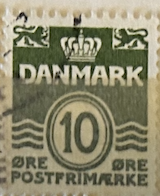
| SOURCE | TITLE| IMAGE MATCH | click to source page |
| HipStamp | Danmark # 437 - Wavy Lines - 30 öre - used {Dk1} | Europe - Denmark, General Issue Stamp / HipStamp | 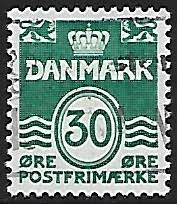 |
| eBay | Denmark 1940 -- Wavy Lines 10 Ore *Used* (HBX) | eBay | 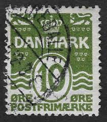 |
| lastdodo.com | Forsikrings – Aktieselskabet “Skandinavia” A/S Grøn & Witzke Perfin catalogue - LastDodo | 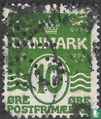 |
| Mercari | 1907 Denmark (No.2(A1) Newspaper Postage Due | Mercari | 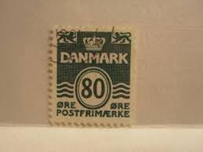 |
| Fine Art America | Denmark 10 Ore Green Lion and Crown Stamp Acrylic Print by Vivida Gallery - Fine Art America |  |
| eBay | Denmark 1933-50 Sc# 220/ 318 numerals at value 8 stamps MNH | eBay | 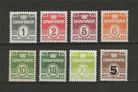 |
| eBay | Danmark Collection - Unused Stamp & Unused 1 Ore Ore Coin - Educational Gift | eBay | 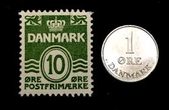 |
| NorthStamp | DENMARK 1915 ISSUES TO DATE Mint & Used Stamps | 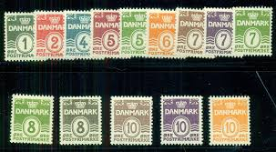 |
| Etsy | Stamp Art, Dark Green, Wavy Lines, 15 Ore, Denmark, Used Stamps - Etsy | 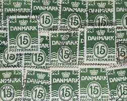 |
| JF-Stamps | Tête Bêche | JF Stamps Danmark | 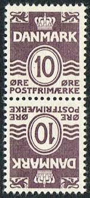 |
| Jay Smith & Associates | Jay Smith & Associates: Denmark: Cancellations: By Type - Crown and Posthorn: M-Z | 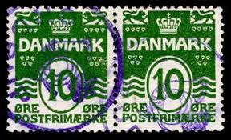 |
| eBay | Denmark 1985, Definitive Stamps: Wavy Lines without Hearts set MNH, Mi 821-22 | eBay | 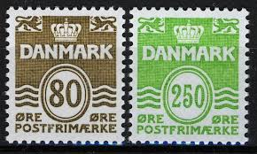 |
| eBay | Denmark 1950-71, 3v Wavy lines MNH, 328x, 332x ,512 | eBay | 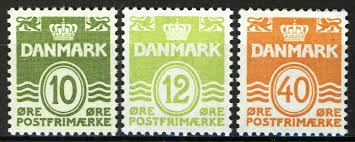 |
| eBay | DENMARK - SON STJ II STAR CANCEL "LØNSTRUP " - KME | eBay | 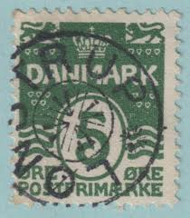 |
| eBay | Denmark, nice mute STRANDBY starcancel | eBay | 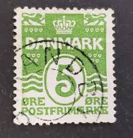 |
| eBay | DENMARK STAR CANCEL N2 SON ! XGE | eBay | 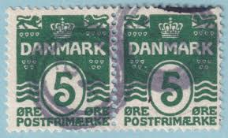 |
| Northwind Stamps | DE0085-965 Denmark Scott # 85-96 VF U. Wavy Lines with Stars - 1913-30 – Northwind Stamps | 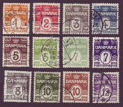 |
| eBay | Denmark 1930-- Wavy Lines 10 Ore *Used* Brown (HBX) TKS101* | eBay | 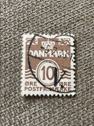 |
| eBay | Denmark booklet strip of 4 including 50 Øre, 20 Øre x 2, 10 Øre. Used. VF.(a5830 | eBay | 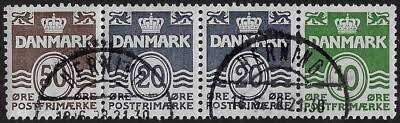 |
| eBay | ONE) 1 ORE DENMARK WOLF SCOUTS of COPENHAGEN WW II ENCASED COIN NOTE STAMP | eBay | 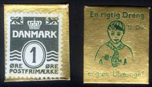 |
| eBay | Denmark, Postage Stamp, #223d Booklet Pane Mint NH, 1933 WIndmill (AD) | eBay | 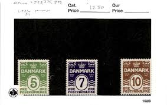 |
| Why stamps have different colors with same design? | 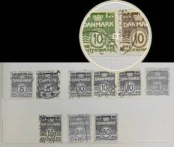 | |
| YouTube | Old/Rare Postage Stamps From Danmark collection - YouTube | 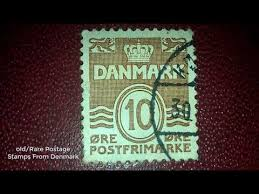 |
| WordPress.com | Frimærkeudstillinger i Slagelse | Slagelse Frimærkeklub | 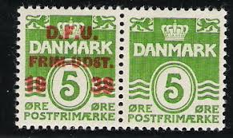 |
| Stamp Auction Network | catalog Level 3 | 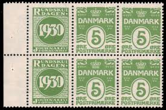 |
| eBay | Denmark Scott 60a Used. | eBay | 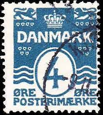 |
| eBay | Green Individual Danish & Faroese Stamps for sale | eBay | 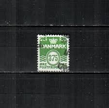 |
| eBay | DENMARK #223b, 228a, 5ore & 10ore Tete-beche Gutter Pairs | eBay | 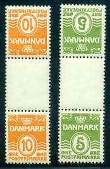 |
| vividagallery.com | Denmark 10 Ore Violet Lion and Crown Stamp Weekender Tote Bag by Vivida Gallery - Vivida Gallery | 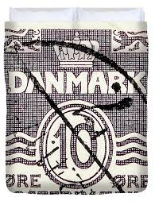 |
| eBay | Denmark Scott #263 Used | eBay | 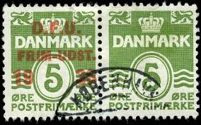 |
| eBay | FIGURES SET BLOCKS OF 4 VF USED DK DENMARK DANMARK DÄNEMARK K1 | eBay | 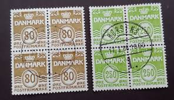 |
| eBay | Denmark 1933 Sc# 224 Arms Lion 5ore numerals block 4 MNH | eBay | 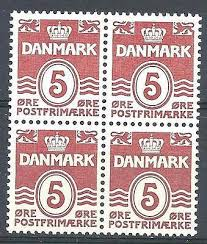 |
| Mercari | 1938 Denmark 5 Ore Stamp - Figure Wave Type - | Mercari | 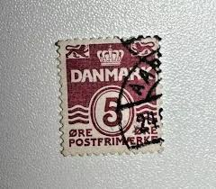 |
| HipStamp | DENMARK (RE1) 5ore brown Hafnia advertising pair, used | Europe - Denmark, Stamp / HipStamp | 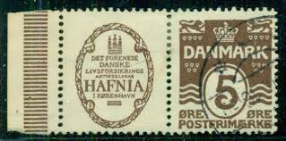 |
| eBay | DENMARK (RE2) 5ore brown DANSKE PHONIX adv pair NH | eBay | 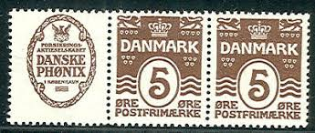 |
| eBay | Denmark Scott #798c MNH BOOKLET COMPLETE Queen Margrethe II Numerals CV$15+ | eBay | 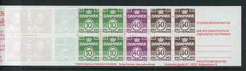 |
| Bruun Rasmussen | Stamps, Covers & Postal History › Faroe Islands › Stålstik – Bruun Rasmussen Auctioneers | 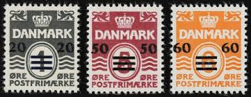 |
| ProBoards | Help with wavy line 2ö of Denmark (Scott 58, Facit 77) | The Stamp Forum (TSF) | 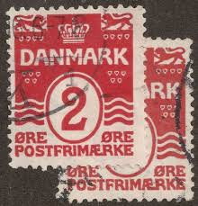 |
| eBay | e5827/ Denmark Amager AMA-FIL Exhabition Wavyline Block in Book 1938 incl Cover | eBay | 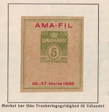 |
| eBay | Denmark. #89b. 1927. HAFNIA & DANSKE PHØNIX. Booklet pane. F MNH (PK1691) | eBay | 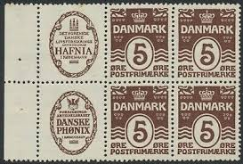 |
| eBay | DENMARK STAR CANCEL SON VTOFTE - MNX | eBay | 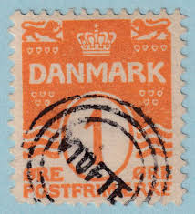 |
| eBay | Denmark #163 Used- WDW Philatelic (F6D) (8/24) | eBay | 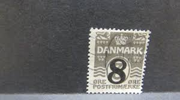 |
| Jay Smith & Associates | Jay Smith & Associates: Denmark: Specialized Stamps: 1905-1912 Wavy Lines - Crown Watermark | 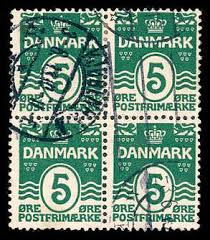 |
| eBay | Lot of 2 Danish Postage Stamps 1933 Figure Wave Green 5 Danish Ore Canceled | eBay | 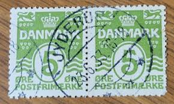 |
| eBay | Rare Denmark Stamp | eBay | 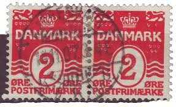 |
| Free stamp catalogue | Stamps from Denmark - Freestampcatalogue.com - The free online stampcatalogue with over 500.000 stamps listed. | 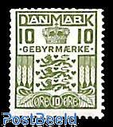 |
| eBay | Denmark, Postage Stamp, #59-60 Mint NH, 1905 (AB) | eBay | 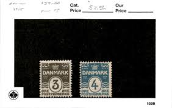 |
| eBay | DENMARK #96, Mint Never Hinged, Scott $62.50 | eBay | 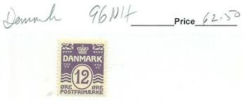 |
| eBay | Denmark Stamp Scott# 20 Royal Emblems 1871 Used H360 | eBay | 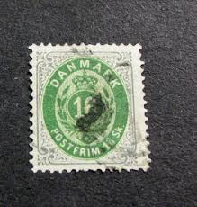 |